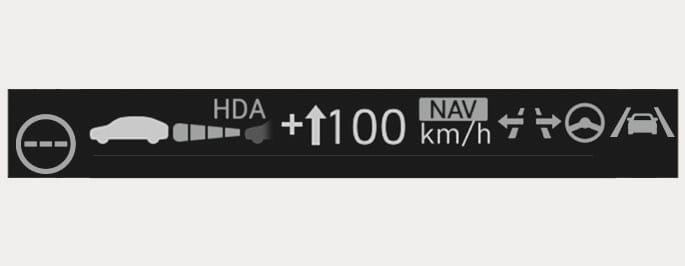
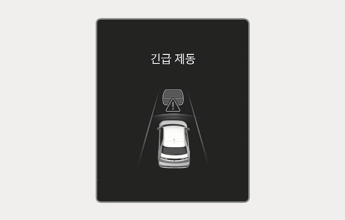
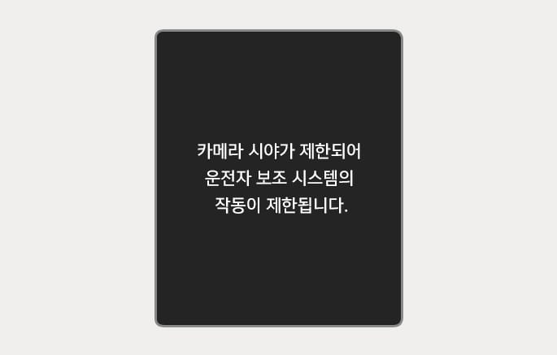
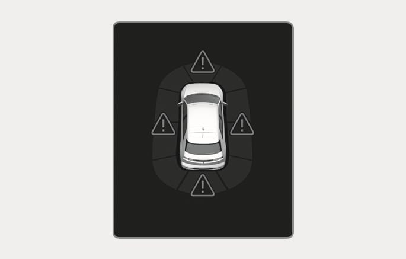

운전자 보조 기능 작동 표시
클러스터에 운전자 보조 기능의 작동을 표시합니다.
클러스터 사양 또는 테마에 따라 클러스터에 표시되는 이미지나 색상이 다를 수 있습니다.
클러스터 상단에 운전자 보조 기능의 상태를 표시합니다.

2C_ADASclusterdisplay
수동 속도 제한 보조, 지능형 속도 제한 보조, 차로 이탈방지 보조, 스마트 크르즈 컨트롤, 내비게이션 기반 스마트 크르즈 컨트롤, 차로 유지 보조, 고속도로 주행 보조의 작동 중에는 항상 표시합니다. 상세 내용은 각 기능의 설명을 참고하십시오.
클러스터에서 운전자 보조 뷰를 설정하면 주행 중 운전자 보조 기능의 상태를 표시합니다.
자세한 내용은 4장 '클러스터 뷰 모드'를 참고하십시오.
헤드업 디스플레이가 적용된 경우에도 운전자 보조 기능 상태를 표시합니다. 상세한 내용은 5장 '헤드업 디스플레이 (HUD)'을 참고하십시오.
운전자 보조 기능의 경고를 클러스터에 표시합니다.

2C_FCABasicEmergencyBrakingInfo
작동하는 기능에 대한 전방 안전 (

2C_CheckDrivingAssistWarning
운전자 보조 기능에 이상이 있으면 클러스터에 경고문이 표시되고 통합 (

2C_CameraDisableWarning
전방 카메라의 렌즈 앞 유리창, 전방 레이더 커버, 범퍼(사양 적용 시), 초음파센서 또는 센서에 눈, 비 등 이물질이 묻거나 안개, 폭우 등의 기상 상황으로 인식 성능이 저하되면 운전자 보조 기능이 일시적으로 제한되거나 작동하지 않을 수 있습니다.
이때 클러스터에 경고문이 표시되고 통합 (
인식 센서 가림 경고 내용은 클러스터 유틸리티 정보 뷰의 서비스 메시지에서 확인하실 수 있습니다.
이물질을 제거해도 운전자 보조 기능이 정상적으로 작동하지 않으면 당사 직영 하이테크센터나 블루핸즈에서 점검을 받으십시오.
-
인식 센서 경고문이 표시되지 않거나 경고등이 켜지지 않더라도 운전자 보조 기능이 정상적으로 작동하지 않을 수 있습니다.
-
시동을 건 직후에 인식 센서가 오염되었거나 차량 주변에 물체가 존재하지 않는 경우(앞이 막힘 없이 트인 장소 등) 운전자 보조 기능이 정상적으로 작동하지 않을 수 있습니다.
-
가림 및 고장 상태에서는 재시동 하여도 가림 및 고장 상태가 유지되어서 운전자 보조 기능이 정상적으로 작동하지 않을 수 있습니다.

2C_PDWInfo_2
후방 교차 충돌방지 보조, 주차 거리 경고, 주차 충돌방지 보조가 작동 중일 때 기능 이상이나 인식 센서의 가림이 발생하면 대상 방향에 통합 (